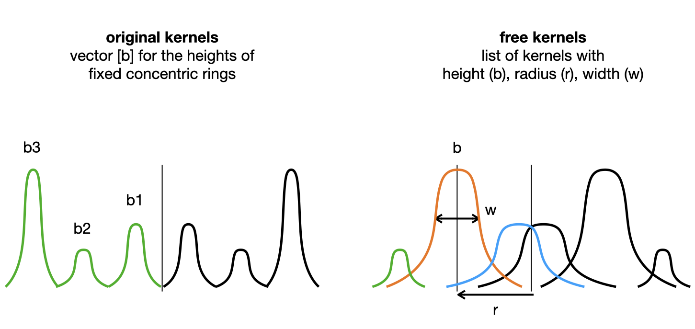

Learning Sensorimotor Capabilities in Cellular Automata
Learning robust creatures
initializing...

Spatially localized patterns in cellular automata have shown a lot of interesting behavior that led to new understanding of self-organizing system. While the notion of environment is a keypoint in Maturana and Varela biology of cognition, studies on cellular automata rarely introduced a well defined environment in their system. In this paper, we propose to add walls in a cellular automata to study how we can learn a self-organizing creature capable of reacting to the perturbations induced by the environment, ie robust creatures with sensorimotor capabilities. We provide a method based on curriculum learning able to learn the CA rule leading to such creature. The creature obtained,using only local update rules, are able to regenerate and preserve their individuality and structure while dealing with the obstacles in their way..
Introduction
In Maturana and Varela work , cognition is centered around how an agent "reacts" to the perturbation induced by it's environment . More precisely, they introduce the notion of cognitive domain of a self-organizing system which are all the perturbations induced by the environment which do not result in the destruction of the self-organizing system. Their notion of cognition is thus deeply linked with how a self-organizing creature will try to preserve its integrity in its environment. ("living is ")
From their theories, studies has been made to apply those notion to examples of self-organizing systems. For example, the game of life and especially the glider has been studied under their paradigm showing again the richness and complexity of such system. However, even if the glider in the game of life has shown to be a good toy model to explicit those theories with interesting interaction, they're also quite simple entity that are not very robust, with a lot of perturbation leading to destruction. (Also in those work, the environment wasn't well defined like walls food etc, but rather other structure.)
In biology, We also find sensorimotor capabilities at the macro scale for example in swarm of bacteria where a group of bacteria seem to avoid a wall of antibiotics. group decision making for obstacle avoidance
Other studies, taking inspiration from biological regrowth in some animals, focused on the recovery from Deformation/ damage , applying Cellular automata to build and regenerate damaged parts.
IN Lenia , we can see some sort of sensorimotor capabilities. However, even if there are interaction between some entity, there is no well define environment. The search for new creature in Lenia was first done manually testing parameters and mutating it or with simple evolutionary algorithm for moving creature for example. Other studies focused on exploring as much as possible the space of creature in Lenia using intrinsically motivated explorer . However this last techniques had a hard time finding moving creature.
In cellular automata, what's interesting is that we have the same local update rule applied to every cell (no cell has a special role ), yet it allows to have very complex self organizing structure. In this work, we'll show how to learn the Ca update rule leading to robustness and sensorimotor capabilities with walls. The creature we obtain, from the deformation induced by the walls on some part of it make new deicision at the macro level on where to go/how to react. What's even more interesting is that the computation made for the decision are all made in the creature itself, at the morphology level. (Each cell then from its neighboors know what it should do.)
In this work, we
no well define environment and creature obtained by luck and not very robust.
swarm robotics ?
The system

Lenia
The cellular automaton we will study in this work is Lenia . Lenia is a system of continous cellular automata where a wide variety of complex behavior has already been osberved, including what looks like sensorimotor-capabilities. In this work i will use the multi channel, multi kernel version of Lenia but for simplicity we will only use 1 channel for the creature and other ones for the environment.
A Lenia system like all CA starts from an initial pattern and iteratively update every pixel based on its neihgbours. The CA rule is given by the kernels and associated growth map.
Walls
To implement walls in Lenia we simply added a walls channels with a kernel from the wall channel to the creature channel. This kernel have a huge negative growth where there are walls and no impact on other pixels where there are no walls. This way we prevent any growth in the pixels where there are walls. This is similar to where they put antibiotic zone as obstacle where the bacteria can't live. The creature can only sense the wall through the changes/deformations it implies on the creature, so the creature has to "touch" the wall to sense it. (But because of the cellular automaton nature of the creature the information has to be transmitted to other cells.)
Note that we used kernel for the walls so that the system stays under the Lenia paradigm using local kernels only for the updates.
In this study, the creature can't have any impact on the walls. This differs from other studies such as in the game of life where the creature also perturb it's environment.
Glider type of creature has been found in 1 channel lenia. However, they're not very robust to walls as shown here:
Differentiable Lenia
Now that the environment is defined, we want to learn both the initialization and the CA rules leading to interesting behaviors. All parameters of the CA rule will be optimized, as well as the initialization which will be a square of fixed size.( each pixel will have its value optimized)
To learn these parameters we chose to use gradient descent method. Thus we tried to make Lenia as Differentiable friendly as possible. To do so, the main shift is to use "free kernels", using kernels in the form of a sum of n overlapping gaussian bumps: $$x \rightarrow \sum_i^{n} b_i exp(-\frac{(x-rk_i)^2}{w_i}) $$. The parameters are then 3 n dimensional vectors: b for height of the bump, w for the size of the bump and rk for the center of the bump.

We did this shift because in the vanilla version of Lenia, the shape of the kernel was only given by a vector b of arbitrary size (but often max size 4). The number of bumps was given by the number of coefficient in b>0. However, the fact that the number of bumps depends on the number of coefficient > 0 prevents proper differentiation.
(if a coefficient is at 0 then it won't change with gradient descent as it doesn't play a role, and if a coefficient is >0 a gradient step can put it <0 which will make a strong unexpected change). We could have left the number of bumps to an arbitrary value like 3, and only optimizing the height such as they stay >0 but this would have been a strong limitation on the shape. The "free kernels", in addition to differentiation, allow more flexibility than the vanilla bumps but at the cost of more parameters.
However even doing so, differentiating through Lenia can be difficult because we often have quite a big number of iterations and each iteration has it's result clipped between 0 and 1.
Learning Moving Creature in Lenia
Before trying to find sensorimotor capabilities in our system a first step would be to find moving creatures like glider in the game of life. Note that moving creature in cellular automaton differ from other type of movement like muscle contraction or soft robot (article) by the fact that moving is growing at the front and dying at the back.
In this paper, we learn to develop morphology and motricity at the same time. The CA rule will both be applied to grow the creature from an initial state and be the "physics" that makes it move.
Target image with MSE error seems effective to learn CA rule leading to certain pattern . ANd the fact that it's a very informative loss, thus helping with vanishing gradient problem made us choose this loss for our problem over other losses such as maximizing the coordinate of the center of mass . THe first target shape we tried was a single disk. However after seeing the robust creature obtained with this disk as target seemed to have a "core" and a shallow envelopp, we informally chose to move to two superposed disk, a large shallow one with a thick smaller one on top. The target shape has the formula: \(0.1*(R<1)+0.8*(R<0.5)\). We chose on purpose to have the sum to be smaller than 1 because as we clip to 1 the pixel after each update it/s better to have pixel below 1 than pixel saturated if you want to have gradients.
However simply putting a target shape far from initialization and optimize towards it does not work most of the times. In fact, it works only when the target is not too far from where the creature ended before optimization (so after the random initialization) . This comes from the fact that applying a lot of steps, each clipped, prevents gradient from flowing. The solution we propose to go further than this is curriculum learning.
IMGEP and Utility of curriculum

In fact, once we obtain a creature able to go a little further than the initialisation, we can push the target a little bit and learn to attain it. This time the new target needs to overlap where the creature is able to go after the first optimisation. Then we just need to iterate this process. SCHEME
The effectiveness of curriculum with complex task has already been shown in . And in complex self organizing systems in
One modular way we introduced it was using IMGEP which has already been used as an explorative tool in Lenia to explore the morphological space .
The general idea of IMGEP is to iteratively set new goals to achieve and for each of these goals try to learn a policy that would suit this goal. THis way an IMGEP needs an interesting way to sample new goal for example based on intrinsic reward. It also needs a way to track the progress on this goal, and a way to optimize toward this goal. It also might use the knowledge acquired on other goals to learn new goals or attain them more quickly.
def update(perception_vector):
# The following pseudocode operates on
# a single cell’s perception vector.
# Our reference implementation uses 1D
# convolutions for performance reasons.
x = dense(perception_vector, output_len=128)
x = relu(x)
ds = dense(x, output_len=16, weights_init=0.0)
return ds
In our case, the goal space will simply be a 2 dimensional vector representing the position of the center of mass of the creature at last timestep. The way we sample the goals depends on the task but to have a moving creature that goes far in the grid, we will randomly sample position in the grid biasing the sampling toward one edge of the grid. we use MSE error between the last state and our target shape centered at the target goal to try to achieve this goal. The way we reuse knowledge acquired is by intializing the parameters by the one that achieve the closest goal.
Learning robust creatures with sensorimotor capabilities

Initialization is the yellow square; Left: reached goal library in green, target goal in read. THe policy selected is the one reaching the position in purple circle; Right: Blue is the obstacle, red the target shape and green the creature before optimisation at last timestep. Green dashed line is at the same position in both.
Now that we have an algorithm that is capable of learning moving creature in Lenia. the next step is to find a way to learn a creature that would resist and avoid obstacles in its environment, using the deformations the environment induces on it to sense. In this section, we'll try from scratch to learn a single CA rule and initialization that lead to building, moving and regenerating creature. So we will learn a single global rule for multiple functions contrary to which separates regenerating and building into two different CA.
What we want to obtain is a creature that is able to generalize to different obstacles. To do so we will train the creatures on randomly generated obstacles. This way our gradient descent will be stochastic gradient descent with the stochasticity coming from the sampling of the obstacles. The learning process will thus encounter a lot of different configurations and may find general behavior. In practice, we will only put obstacles in half the lattice grid. This way, there will be half of the grid free from obstacle where we will first learn a creature that is able to move without any perturbation as in previous section and then as we push the target further and further the creature will start to encounter obstacles. And the deeper the target position is, the more it will encounter obstacles and so the more it should be robust. In fact at the beginning you will just be a little perturbed by one obstacle and the target circle will optimize the creature to get past the obstacle and recover. (scheme) Then if you want the creature to go further it will have to encounter more obstacles and still be able to resist the second one even if the first one perturbed it. See appendix for more details on the obstacles.
In the IMGEP, to take into account the fact that the position attained depends on the obstacle configuration, the reached goal will be an average of the position attained on different configurations of obstacles.
Overcoming "bad initialization" problem
While training with this algorithm sometimes the optimisation could not get creature getting passed the obstacles because of the initialization and creature that were obtained from the initialization were not "good" enough. This can be mitigated by adding random mutations before optimizing. It may unstuck the situation however the creature after mutation are often not that good and most of the time far from the target goal (because mutation often make "suboptimal" creature that may be slower than the one before mutation) which prevent learning. So mutation can help unstuck situation but also slows the training. This is why we loop until we fight good mutation meaning mutation that don't kill or explode the creature and also why we apply less optimization steps for the mutated one, see appendix for more details.
This does not solve the problem 100\% of the time and that's why we also apply initialization selection. We run deterministic first steps (fixed target position), until we find an initialization which gives a good loss for the 3 first deterministic target.
Results
The resulting creature are very robust to walls perturbations and able to navigate in difficult environment. In fact, even if the creature were only trained for 50 timesteps in the system and few circle obstacles, the resulting creature seem to be long term stable and able to recover from perturbation induced by various shape of wall including vertical walls. One very surprising emerging behavior is that the creature is sometimes able to come out of dead end showing how well this technique generalizes. There are still some failure cases, with creature obtained that can get unstable after some perturbation, but the creature are most of the time robust to a lot of different obstacles.
Study of the creatures
What's interesting in such system is that the computation of decision, is all done at the macro (group) level showing how a group of simple identical entities through local interactions can make "decision", sense at the macro scale. Seeing these creature it's even hard to believe that they are in fact made of tiny part all behaving under the same rules.
In fact in order to navigate, first it need to sense the wall through a deformation of itself. Then after this deformation it has to make a collective "decision" on where to grow next and then move and regrow it's shape.
After visualizing the kernels and doing informal ablation studies it seems that the creature we obtain have "limiting growth" kernel that tries to prevent the creature from growing too much beyond its boundaries and also growth kernel. Those two type of kernel are in equilibrium but We can play with the weight of each kernel a little bit without destroying this equilibrium. For example the main utility we found of this is that "limiting growth" kernels can be given more importance to enforce the individuality of the creature and prevent several creature colliding from merging (see next section) because it gives stronger boundaries. However putting too much weight on those limiting kernels can lead to creature dying from too much damage as you inhibit growth.
Surprisingly some creature looked a lot like creature from which were obtained by evolutionary algorithm or by hand made mutations.
Multi creature setting
By adding more initialization square in the grid, we can add several creature with the same update rule. As pointed out in , other entity are also part of the environment for the creature and can give rise to nice interactions. Maturana and Varela even refer to this kind of interaction as communication.
The creature obtained shows strong individuality preservation. In fact, creatures goes in non destructive interactions most of the times without merging. As said before, we can tune the weight of the kernels (especially the limiting growth one to make the merge of two creature harder. By increasing those limiting growth kernels, the repeal of two entities get stronger and they will simply change direction.
One other type of interaction between two creature of the same species(governed by the same update rule/physic) is creature getting stuck together. The two creatures when they collide are stuck together going in the same direction. However even when they're stuck together, from a human point of view seeing this system, we ce can still see 2 distinct creatures.This type of behavior is studied in the game of life in with the notion of consensual domain.

Another interesting interaction we observed during colision was "reproduction". In fact for some collision, we could observe the birth of a 3rd entity. This kind of interaction seemed to happen when one of the two entity colliding was in a certain "mode" like when it just hit a wall. Our intuition is that when it hits a wall, it has to have a growth response in order to recover. And during this growth response if we add some perturbation of another entity it might separate this growth from the entity and then this separated mass from strong self-organization grows into a complete individual.
Different target shape
To try to have more diversity in the morphology of the creature we tried to change the target shape. In fact as the creature is optimized to fit this shape at the last timestep we can expect that changing this shape may lead to other morphologies.
However we tried with half circle, star and sharp star without success. For all of these shape we still obtained roundish morphologies. This may be due to the kernel shape which bias the shape of the creature. However as shown in the appendix, we can optimize the growth toward a complicated gecco shape. The failure of these optimisation may be due to the difficulty added by the fact that we want a moving creature.Thus When we optimize the MSE loss, before trying to make this complicated shape the optimization first learns to get the creature to where it should be, and trying to grow it into this star shape may not be well aligned with this.

We still tried to have roundish shape different from a single disk. For example we put as our target 2 disk target(defined \ref{}) close, overlapping a little bit. And the creature it produced was a creature seemingly composed of two roundish creature stuck together. But the force of their attraction is quite big as even when one of the creature collide an obstacle, they keep being stuck. And even when they seem to separate from a collision with an obstacle, they each independently follow the obstacle until they merge again.(However we can see at the end of the clip that they start to explode at the end) This type of behavior might be hard to get from random exploration as small mutation on the CA rule easily break this attraction leading to 2 separate creature going their own way from initialization or even worse lead to repealing creature.
Discussion
Surprising to see that the creature is able to do all the computation required for changing direction in itself.
radius is quite big while \cite{mordvintsev2020growing} Moore neighbourhood size 3. (but no hidden channel)
Even if this, this work still provides interesting idea on how to learn parameters in complex systems that can be very sensitive, especially how to deal with certain problems such that vanishing gradient, bad initialization.
food?
discussion difficulty coming from other agents becoming stronger competition in evolution/\cite{baker2020emergent}). Future work might use these creature as basis for species mutate them and make them compete for food.